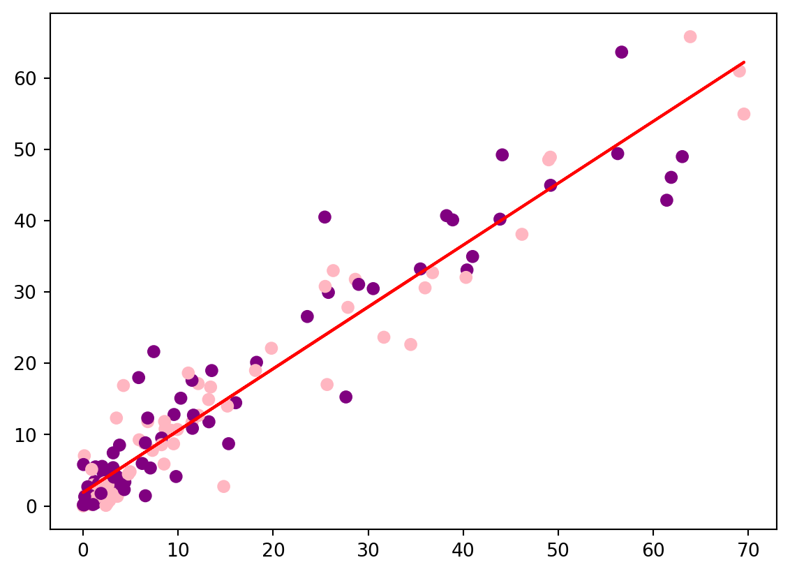
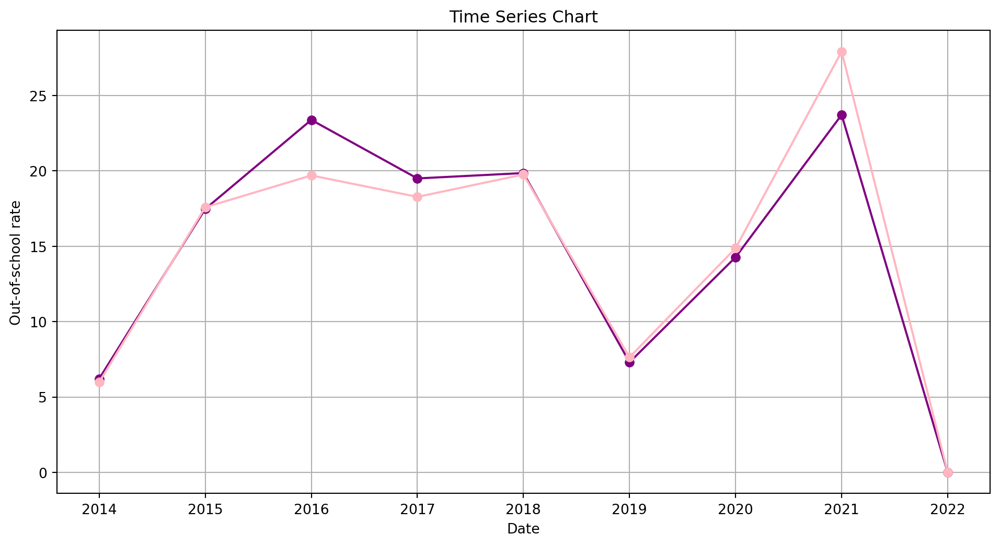

A global perspective adolescents out of school rate
INTRODUCTION
This page contains visualization highlighting the numbers of adolescents who are out of school. This visualization provides insights into the educational landscape, highlighting key metrics and trends related to adolescent education worldwide.Explore the data to gain a deeper understanding of the factors contributing to out-of-school percentages such as GDP per capita and the implications for global education initiatives.
fig = px.choropleth(data, locations='alpha_3_code', color='obs_value', hover_name='country', projection='natural earth', title='GDP per Capita by Country')fig.show()
By examining the world map, we can identify the countries where data was collected and utilize highlighting tools to observe percentage of adolescents out of school across different countries and years. Notably, trends reveal higher levels of adolescents who are out of schools is in countries located in the central South African region.
TREE MAP
Code
fig1 = px.treemap(gdp_obs_value, path=['continent'], values='total_gdp', color='total_gdp', color_continuous_scale='purpor')fig1.update_layout(title ='Continent wise distribution of GDP per Capita')fig2 = px.treemap(gdp_obs_value, path=['continent'], values='total_obs_value', color='total_obs_value', color_continuous_scale='purpor')fig2.update_layout(title ='Continent wise distribution of out of school rate')fig1.show()fig2.show()
Through our Continent-driven Out-of-School Adolescents chart, unveiling disparities in education that access worldwide. Identifying the clear correlation: continents with higher GDPs exhibit lower percentages of out-of-school adolescents, where as those with lower GDPs face higher rates. This simplified report highlights regions with elevated proportions of out-of-school adolescents, directly impacting GDP per capita.
The bargraph displays important statistics and patterns about the percentage of male and female teenagers in each continent that do not attend school. The graph attempts to give a brief, simply readable summary of the differences in teenage girls’ and boys’ access to schooling
SCATTER PLOT
Code
new_df = pd.DataFrame()new_df['year'] =list(data.year.unique())female = []male = []for i in new_df['year']: female_sum = data.loc[(data['sex'] =='Female') & (data['year'] == i), 'obs_value'].mean() male_sum = data.loc[(data['sex'] =='Male') & (data['year'] == i), 'obs_value'].mean() female.append(female_sum) male.append(male_sum)new_df['female_obs_value'] = femalenew_df['male_obs_value'] = maledf_sorted = new_df.sort_values(by='year')df_sorted.set_index('year', inplace=True)result_df = data.groupby('sex')['obs_value'].apply(np.array).reset_index(name='obs_vales')result_df.set_index('sex',inplace=True)f = result_df['obs_vales']['Female']m = result_df['obs_vales']['Male']# Calculate regression line coefficientsa, b = np.polyfit(f, m, 1)c = ['purple', 'lightpink'] *72+ ['lightpink'] # Create scatterplotplt.scatter(f, m,c=c)# Add regression line to scatterplotplt.plot(f, a*f+b,c='red')plt.show()

The above scatterplot represents the relationship between the observed values of two variables, ‘Female’ and ‘Male’. Each point on the scatterplot represents a pair of observed values for ‘Female’ and ‘Male’.The scatterplot also includes a regression line (in red) fitted to the data points using linear regression. The regression line provides a visual representation of the linear relationship between the ‘Female’ and ‘Male’ observed values. Additionally, the color of each data point alternates between ‘purple’ and ‘lightpink’, creating a visually appealing pattern on the scatterplot.Overall, the scatterplot and regression line help to visualize the relationship between the observed values of ‘Female’ and ‘Male’ variables, and the color pattern adds an additional layer of visual interest to the plot.
TIME SERIES CHART
Code
# Create a time series chartplt.figure(figsize=(12, 6))plt.plot(df_sorted.index, df_sorted['female_obs_value'], color='purple', marker='o', linestyle='-')plt.plot(df_sorted.index, df_sorted['male_obs_value'], color='lightpink', marker='o', linestyle='-')# Add labels and titleplt.xlabel('Date')plt.ylabel('Out-of-school rate')plt.title('Time Series Chart')# Display the plotplt.grid(True)plt.show()

The time series chart compares fluctuations of the out-of-school rates over the years from 2014 to 2022 for males and females. The time series chart consists of two lines: one representing the out-of-school rates for females in purple and the other for males in light pink. Each point on the lines corresponds to the out-of-school rate for a specific year.The x-axis represents the years, while the y-axis represents the out-of-school rates. The chart visualizes how the out-of-school rates for males and females have changed over time, allowing for easy comparison between the two. The chart shows a sharp decline from 2014 to 2015, followed by a gradual increase until 2017. After a brief dip in 2018, the values rose steadily until 2020. The chart then displays a significant spike in 2021, reaching the highest point on the graph. Overall, the time series chart effectively presents the trends in male and female out-of-school rates over the years, allowing for easy interpretation and comparison of the data.
CONCLUSION
The analysis presented reveals a compelling inverse relationship between a country’s economic status, measured by its gross domestic product (GDP) per capita, and the percentage of adolescents who are out of school and not receiving formal education. This trend is observed both at the national level within individual countries and when examining data across entire continents.Countries with higher GDP per capita tend to have lower rates of out-of-school adolescents, suggesting that greater economic resources and development are associated with better access to educational opportunities for young people. Conversely, nations with lower GDP per capita face the challenge of higher percentages of adolescents who are not enrolled in formal schooling systems.Notably, in countries with lower GDP levels, there is a positive correlation between the out-of-school rates for male and female adolescents. This finding implies that economic constraints and limitations in these nations impact access to education for both genders, rather than disproportionately affecting one gender over the other.Furthermore, the report highlights the specific countries with the highest percentages of out-of-school adolescents, shedding light on the regions and areas that require urgent interventions and targeted efforts to address these educational disparities. By identifying these hotspots, policymakers and stakeholders can prioritize resources and implement strategies to improve educational access and opportunities for adolescents in these underserved regions.Overall, the analysis underscores the significant impact of economic factors on educational attainment and highlights the need for concerted efforts to address this global issue, particularly in lower-income nations, to ensure equitable access to education for all adolescents, regardless of gender or economic circumstances.